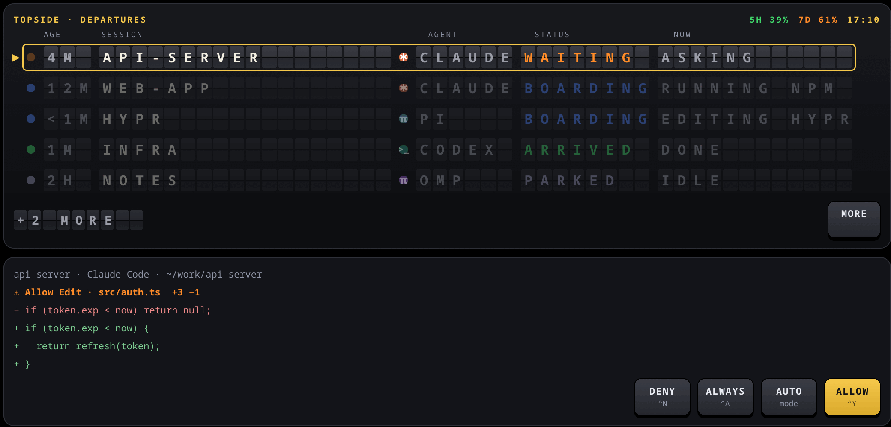

Topside on the Mac is an island in the notch that tells me which coding agent is waiting on me. In September I set up an Arch box next to the Mac, and the agents came along. They sat on Allow this command? in a tab three workspaces away, same as before.
Linux has no notch. It has something better: a bar you built yourself. So that's where Topside goes.
It sits in the bar you already run. On SekaiPop it's a bar entry, on DankMaterialShell a widget with a settings page, and on anything else a small Quickshell pill you can park in one of nine spots. topside setup looks at what's running and installs the right one. Each one shows a dot per session. Blue works, orange waits on you, green is done.

- ^Yallow
- ^Ndeny
- ^Aalways (Claude Code)
- ^1…^9pick an option
- ^Jjump
- escclose
It reads Claude Code, Codex CLI, pi and omp. A request to run a command or touch a file shows up with its diff. Answer it from the bar, or in the terminal, and the other one goes away. I was careful about one thing: a card that opens by itself never grabs the keyboard. You'd be mid-sentence in a terminal, and Topside isn't worth a lost sentence.
On SekaiPop I let myself have fun. Board is a split-flap departures board. Kitchen prints each request as an order ticket that you stamp ALLOW or DENY, and the session list hangs on a kitchen rail under a chalkboard of your plan usage. Classic is the plain cards, if that's more your bar.

When you'd rather answer in the terminal, ^J or a click takes you there. Topside walks up the session's process tree to its window, focuses it through hyprctl, and picks the tab in WezTerm, Orca or tmux. That part needs Hyprland. Other compositors still get the list and the answers.
How it works
Each agent's hook runs topside hook, which hands one JSON message to a small daemon over a Unix socket. The daemon runs as a systemd --user service and keeps sessions in SQLite under ~/.local/state/topside. The bar draws what the daemon says. Nothing leaves the machine, and stopping the daemon puts every agent back to asking in the terminal.
Unlike the Mac app, this one is MIT, and the code you install is the code that runs: plain JavaScript and QML under /usr/lib/node_modules/topside-arch. A tool that reads your prompts should be one you can read.
Install
sudo pacman -S nodejs npm quickshellsudo npm install -g topside-archNode 26 or later. Then, as yourself rather than root:
mkdir -p ~/.config/systemd/user && sed "s|^ExecStart=.*|ExecStart=$(command -v node) $(readlink -f "$(command -v topside)") daemon|" "$(npm root -g)/topside-arch/contrib/systemd/topside.service" > ~/.config/systemd/user/topside.servicesystemctl --user enable --now topsidetopside hooks installtopside setupnpm doesn't do services, so the first line puts the daemon's unit where systemd looks, pointed at wherever npm put topside and whichever node you run (an npm install without sudo, or nvm, puts them in your home, not /usr/bin). The second starts it now and at login. Then come Claude Code's hooks; name codex, pi or omp for the others. The last line puts Topside in your bar. Without SekaiPop or DMS, run topside pill instead.
Already installed and systemctl --user status topside says 203/EXEC? Run the unit line again, then systemctl --user daemon-reload && systemctl --user restart topside. To upgrade, run the npm line again and systemctl --user restart topside. To remove it, first undo what it put into your agents: topside usage uninstall, topside hooks uninstall, and the same with codex, pi or omp for the ones you added. Then systemctl --user disable --now topside and sudo npm uninstall -g topside-arch.
Not there yet
The pill has no keys, sounds, reminders or hiding yet. Ghostty, Kitty and Alacritty get the window but not the tab. It's called topside-arch because Arch with Hyprland is the only place I've tried it; if it works on your distro, tell me and the name can grow up.
Ban
P.S. The release notes list everything in 0.1.1, plan usage and the risky-command gate for pi and omp included.